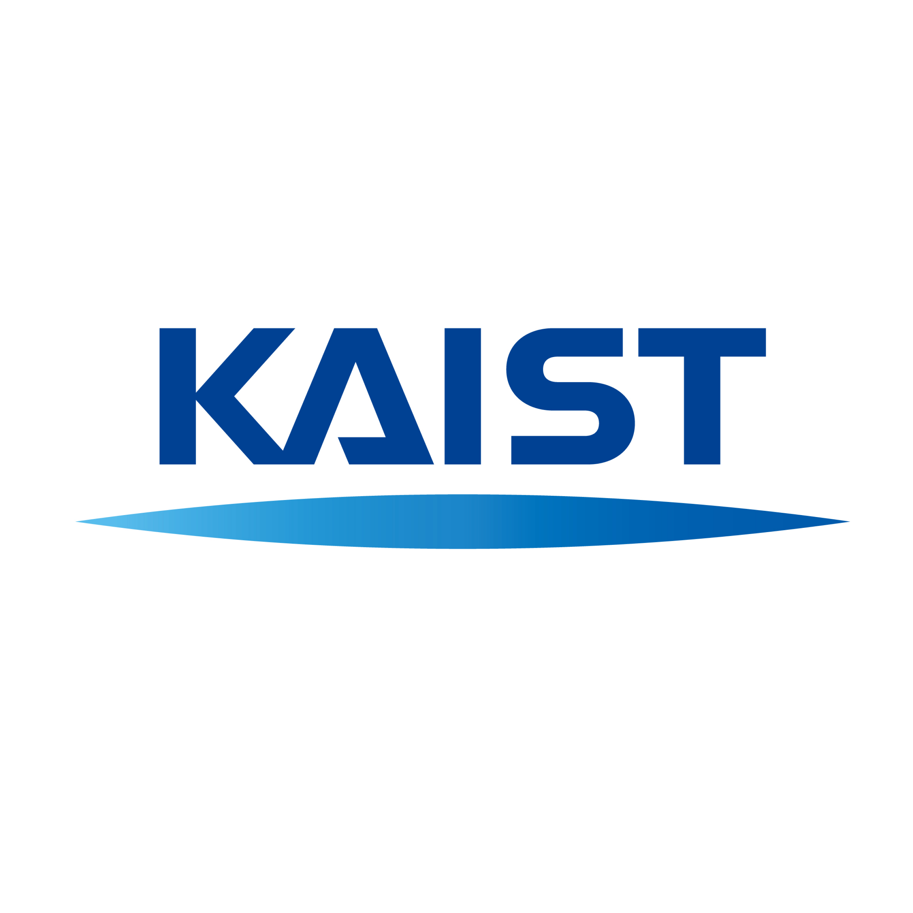

Education
Hanyang University
2020 - 2023
Information Systems B.S

Korea Advanced Institute of Science and Technology
2024 - Present
Graduate School of Culture Technology M.S.
M.S. Student in HCI Tech Lab at KAIST
Hello, I am a master’s student in Human-Centered Interactive Technologies Laboratory at the Graduate School of Culture Technology, KAIST under the supervision of Prof. Sang ho Yoon.
My research interest lie in gaze-based behavior and gaze-hand multimodal interaction. I am particularly fascinated by how eye movements can be used to anticipate user intentions and enhance interactive systems.
2020 - 2023
Information Systems B.S
2024 - Present
Graduate School of Culture Technology M.S.
Team Project of "Culture Technology" [GCT 501] (Spring, 2024; KAIST)
The "WhatIf" project combines Generative AI and Augmented Reality (AR) to create an immersive Tabletop Role-Playing Game (TRPG). By blending physical and digital elements, the game reimagines classic tales, offering players dynamic narratives and interactive gameplay, with the freedom and creativity similar to popular strategy games like "Civilization."
Team Project of "Interaction Sensing Principle & Application" [GCT 623] (Spring, 2024; KAIST)
PreGraspHelper is an innovative interaction concept designed for virtual reality (VR) environments, where it aids in object manipulation before grasping. By detecting a user's intent through gaze fixation on a handle, the system automatically rotates the virtual object into an optimal position for grasping.

Team Project of "Augmented Reality" [CTP 445] (Spring, 2024; KAIST)
Worki-Yo is an innovative project that enhances stretching exercises for office workers through Immersive (AR). By using an intuitive avatar-based guidance system, it provides real-time feedback to improve form and maximize exercise benefits. This project aims to promote musculoskeletal, ergonomic health.

[한국컴퓨터종합학술대회(KCC) 2024] 민경환01*, 김민영1*, 김진아2, 윤상호*
2021.03.01. ~ 2021.12.31.
FORIF Design Committe (2020.09.01. ~ 2020.12.31.)
FORIF Vice President (2022.03.01. ~ 2022.07.31.)
FORIF Administrator (2022.09.01. ~ 2022.12.31.)
FORIF C, Python, Data Analysis, Web Crawling, LLM Study Mentor (2021.03.01.~2023.07.31.)
"My beloved club, where the heart of my university life truly resides"
2021.12.31. (AI Devloper, UI/UX Designer)
Under the supervision of Prof. Youngjoon Won, YOLO based Pill Recognition System
2023.03.01. ~ 2023.07.31.
Under the supervision of Prof. Youngjoon Won,
Blockchain Application Research (NFT Transaction Anlz.)
2022.06.22. ~ 2022.08.31.
Under the supervision of Dr. Lim Yoonseob
2023.01.01.~ Present (CEO, Frontend/Backend Developer)
Crypto Aggregation & Algorithm Trading(Co. MK Associates)